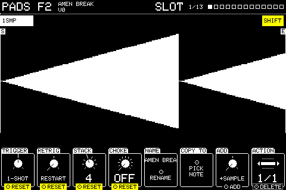

Chapter 1
Basics
1.1 Getting around

The screen has a header along the top, a picture in the middle and a row of eight columns along the bottom. The header's right side names the page shown, with the pages PREV and NEXT go to either side and how many pages there are. Column n is knob n, counting from the left.
Turning a knob changes its column. A column with a push action says so on its bottom edge. Holding Shift shows what Shift changes, filled in yellow: on most settings, Shift + push puts the setting back to how a new one has it (RESET), and Shift + turn makes finer steps (FINE).
While you turn or push a knob, a box can appear above its column for 1.5 seconds with the setting in full: every choice of a list, a file's details, or a name too long for the column. Settings whose column already shows everything get no box.
Two-state settings are drawn as a switch, filled when on, and pushing them flips them. Knobs that step through a list (ACTION, DEVICE, TARGET and so on) show a small list with arrows rather than a dial.
| Panel button | Does |
|---|---|
| Knob 1 to 8 | Turns or pushes that column |
| SHIFT | Second functions; see Shortcuts |
| PREV / NEXT | Previous or next page |
| EDIT | The list of every slot (SLOTS) |
| MIXER | The mixer |
| SEQ | The sequencer |
| KIT | The inputs overview |
| BROWSE | The file browser |
| SETUP | Device settings |
| A screen's key, again | Closes that screen |
| LEARN | CC learn: turn a setting, press LEARN, move a controller knob |
| UNDO | Undo recording and pattern edits, and the last stretch |
| PLAY, STOP, REC | The transport |
| ERASE, REPEAT | Erase or repeat notes in the sequencer while held |
1.2 Shortcuts
Each key's own name is in bold; under it in grey is what it does with SHIFT held. SHIFT is the black key, bottom left, so one hand can hold it while the other reaches every key on the right and all eight knobs.
Transport and recording are on the left, PREV, NEXT and the screens on the right. There is no key to close a screen: press the key that opened it again.
| Combination | Does |
|---|---|
| Shift + REC | OVERDUB: record over the pattern without clearing it |
| Shift + PLAY | TAP: tap the tempo |
| Shift + UNDO | Redo |
| Shift + REPEAT, held | Beat repeat: the main out loops its last slice |
| Shift + PREV / NEXT | The first or last page |
| Shift + SEQ | ARRANGE: the arrangement |
| Shift + KIT | CCS: the list of CC bindings |
| Shift + BROWSE | SAMPLING: record the main out or a mixer channel |
| Shift + SETUP | SAVE the project; from SETUP, save as |
| Shift + knob push | RESET: most settings back to how a new one has them |
| Shift + knob turn | FINE: smaller steps |
| A screen's key, again | Closes that screen |
| ERASE, REPEAT | Act for as long as they are held |
| SHIFT + SETUP held while powering up | Puts the IO board into its USB bootloader, for a firmware update |
1.3 Detail box
Turn or push a knob whose column can't show everything.

Here TRIGGER is being turned: its column shows LATCH, and the box above lists all three choices with the current one picked out. It goes 1.5 seconds after the knob stops.
1.4 Nothing selected
At power-up with an empty project.

Play a note on any device. If a slot plays from that note it's selected and its pages appear; if not, the empty note screen offers to build one.
1.5 Empty note
Play a note that nothing plays from.

The note is selected, ready to build a slot on it.
| Knob | Setting | Turn | Push |
|---|---|---|---|
| 7 | ADD | Choose the first action: SAMPLE, MIDI or TRIGGER | Creates the slot on this note with that action, and opens it |
Knobs not listed do nothing here. Shift + push puts most settings back to how a new one has them.